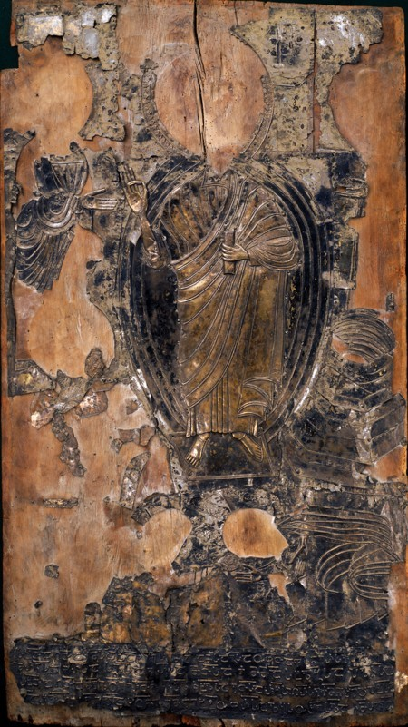

ზარზმის ფერისცვალების ხატის ზვიად ერისთავის წარწერა
შინაარსი / Summary
მოსახსენებელი
ბიბლიოგრაფია Bibliography
კრიტიკული გამოცემა Interpretive Edition
"სხთა ღთა მე ზდი ერთვ ძჱ სლკხლსა ეთსა (ა)რბსი ღრს ვქმნ შმდ პტსა ამ[ს] [ხ] [ტს]ა შვრე სლი და ჴცნი [ჩ]ემნი ხტო ფრსცლბსო შე სლა ჩმს დღსა [მას]"
ს(ა)ხ(ელი)თა ღ(მრთისაჲ)თა მე ზ(ვია)დი ერ(ის)თ(ა)ვ(ი) ძჱ ს(უ)ლკ(ურთ)ხ(ეუ)ლ(ი)სა ე(რის)თ(ავი)სა რ(ა)ბ(აჲ)სი ღ(ი)რსვ(ი)ქმ(ე)ნ შ(ე)მ(კობა)დ პ(ა)ტ(იოსნი)სა ამ(ი) შ(ეი)ვ(ედ)რე ს(უ)ლი და ჴ(ორ)ცნი ჩემნი ხ(ა)ტო ფ(ე)რ(ი)სც(ვა)ლ(ე)ბ(ი)ს(ა)ო შ(ეეწი)ე ს(უ)ლ(ს)ა ჩ(ე)მს(ა) დღ(ე)სა მას
დიპლომატიური გამოცემა Diplomatic Edition
"ႱႾႧႠ ႶႧႠ ႫႤ ႦႣႨ ႤႰႧႥ ႻჁ ႱႪႩႾႪႱႠ ႤႧႱႠ (Ⴀ)ႰႡႱႨ ႶႰႱ ႥႵႫႬ ႸႫႣ ႮႲႱႠ ႠႫ[Ⴑ] [Ⴞ] [ႲႱ]Ⴀ ႸႥႰႤ ႱႪႨ ႣႠ ჄႺႬႨ [Ⴙ]ႤႫႬႨ ႾႲႭ ႴႰႱႺႪႡႱႭ ႸႤ ႱႪႠ ႹႫႱ ႣႶႱႠ [ႫႠႱ]"
ႱႾႧႠ ႶႧႠ ႫႤ ႦႣႨ ႤႰႧႥ ႻჁ ႱႪႩႾႪႱႠ ႤႧႱႠ ႰႡႱႨ ႶႰႱႥႵႫႬ ႸႫႣ ႮႲႱႠ ႠႫ ႸႥႰႤ ႱႪႨ ႣႠ ჄႺႬႨ ႹႤႫႬႨ ႾႲႭ ႴႰႱႺႪႡႱႭ ႸႤ ႱႪႠ ႹႫႱ ႣႶႱႠ ႫႠႱ

ზარზმის ფერისცვალების ხატის ზვიად ერისთავის წარწერა
{'ka': 'ღვთის სახელით, მე ზვიად ერისთავი, ძე სულკურთხეულისა არაბა ერისათავისა, ამ პატიოსანი ხატის შემკობის ღირსი გავხდი.\n შეივედრე ჩემი სული და ხორცი, ფერისცვალების ხატო, და შეეწიე ჩემს სულს იმ დღეს.'}
{'default': 'ივანე ჯავახიშვილი მიიჩნევს, რომ წარწერაში დასახელებული ზვიად ერისთავი XI საუკუნის პირველი მეოთხედის, გიორგი I-ის დროინდელი მოღვაწეა, რომელიც 1023 წელს\n სათავეში ედგა ქართულ ჯარს ბიზანტიის კეისრის წინააღმდეგ ბრძოლაში.\n გარდა ამისა, ფერისცვალების ხატზე მოიპოვება 886 წლის წარწერაც. ივანე ჯავახიშვილი მიიჩნევს, რომ მიუხედავად იმისა, რომ წარწერა 886 წლით თარიღდება, იგი უფრო\n გვიან, XI საუკუნეში ზვიად ერისთავის მიერ მისი რესტავრირების დროს ხელახლა უნდა იყოს გამოჭედილი. ეს ორი წარწერა ერთი და იმავე ხელითა და ოსტატობით არის გაკეთებული\n XI საუკუნეში. როგორც ჩანს, ზვიად ერისთავმა ხატის ხელმეორედ შემოსვის დროს ეს პირველი წარწერაც განაახლა და იქვე თავისი წარწერაც მიაყოლა.'}
<div type="edition" xml:lang="ka" ana="mtavruli" xml:space="preserve">
<ab>
<lb n="1"/><w lemma="ქრისტე"><expan><abbr>ქ</abbr><ex>რისტ</ex><abbr>ე</abbr></expan></w>
<w lemma="განსუენება"><expan><abbr>გა</abbr><ex>ნ</ex><abbr>ო</abbr><ex>ჳ</ex><abbr>ს</abbr><ex>უ</ex><abbr>ენე</abbr></expan></w>
<w lemma="სულ">სოჳ<lb n="2" break="no"/>ლსა</w>
<name nymRef="ვაჩა">ვაჩაჲს<lb n="3" break="no"/>ასა</name>
<name nymRef="გურა"><expan><abbr>გო</abbr><ex>ჳ</ex><abbr>რაჲ<lb n="4" break="no"/>სასა</abbr></expan></name>
<name nymRef="მირა"><expan><abbr>მ</abbr><ex>ი</ex><abbr>რა</abbr><ex>ჲ</ex><abbr>ს</abbr><ex>ა</ex><abbr>ს</abbr><ex>ა</ex></expan></name>
</ab>
</div>